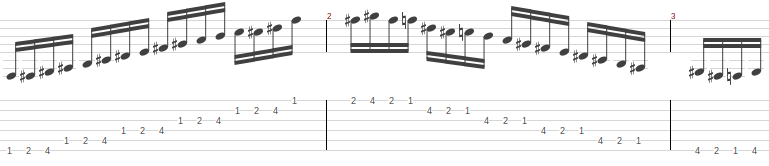
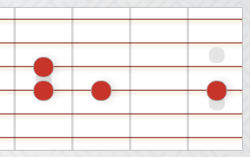

TODO List
Books to read
Literature
Dostojewski
TODO Der Idiot
TODO Tolkien - Lord of the Rings
Dürrenmatt
TODO Der Richter und sein Henker
Philosophy
Spencer Brown - Laws of Form
TODO Lau - Die Form der Paradoxie
TODO Baecker (Hsg.) - Probleme der Form
TODO Baecker (Hrg.) - Kalkül der Form
TODO The Markable Mark
Computer Stuff
TODO Check out: Operating Systems: Three Easy Pieces
Things to do
Show C++
DONE Smart pointers
TODO Inheritance, virtual functions
TODO Interfaces
TODO Copy and Copy Constructors
TODO Move Semantics
TODO Templates
TODO Lambdas
Show Design Patterns
Show Math
Show Physics
Ausflüge
- Hohe Wand
- Mannersdorfer Wüste
- Perchtholdsdorfer Haide
- Seegrotte Hinterbrühl
Courses
Computer Science
TODO Kompilerbau
TODO Objektorientierte Programmierung
TODO Codierungstheorie
Mathematics
TODO Lineare Algebra (Hagen)
TODO Lineare Algebra (TIMMS)
TODO Analysis 1 (TIMMS)
TODO Analysis 2 (TIMMS)
TODO Analysis 3 (TIMMS)
TODO Analysis 4 (TIMMS)
Tutorials
TODO Concurrency in Python
TODO Electronic Circuits Tutorial
TODO Prolog
DONE Distributed Systems
Programming
Homepage
DONE Table of Content instead of HOME button
It's actually in addition to the HOME button.
DONE Search engine for homepage
Creating my own index with Lunr using cheerio html parser.
See Odroid XU4.org::Lunr.js
TODO Improve Preview of search results
I search
- HTML
Heading 2down toHeading 6 .outline-text-2down to.outline-text-6
TODO Create advanced Tag system
What do i want?
- Include global tag list in Dashboard.
- Parse all files on publish.
- List all headings with tag when clicked.
- Has to be dynamic: Create a list of links.
- List all headings with a combination of tags.
- e.g. "Technology" + "Fun" should list everything tagged with those tags.
Questions?
- What do we tag? Only Headings are supported in org publish.
Notes:
- Only Headings have tags.
Headings with tags look like this:
<h3 id="orga3bddc0">Rindfleisch   <span class="tag"><span class="Rind">Rind</span></span></h3>
- We already have an index. So we should include the tags in the index.
See
build_index.jsinLunr_Test. - Use search to find tags and create the link list.
idx.search('tag:foo') - We can also create the tag links in
bigblow.jsbut that's only local.
Which tags should be used?
What about local tags?
- E.g. "top" in Kulinarik.
- In a global context "top" makes no sense, "topRecipes" might be better. But that is maybe too special for a global tag.
- I would have to give global tags a special name, e.g. "gMyGlobalTag" or use upper case for global tags and lower case for local tags.
What should the Controlled Vocabulary be?
- Should not be more than 50.
Should tags be hierarchically ordered?
What could be the additional value added to the already existing tree structure?
- Tags could be useful when a heading that is already classified in the notes tree,
should be reclassified under a different topic.
Example: Data Structures are in
Programming C++and inCode Snippetsand inComputer Science. This can only be done with global tags. - It doesn't make sense to add the same navigational possibilities.
- It could be something like search in the sense that it allows to extract a list of headings with a specific search criteria (tags). What then is the benefit over search?
TODO Open files (pdf, etc.) with login
TODO Improve Citations
- References should have better formatting.
- References should have links.
TODO Add location info
When you jump to a heading, you cannot see where in the overall tree structure you are. Best with links, like in a file browser.
Example:
The Philosophy of Computer Programming -> Ontology -> Operations
Idea
- Replace the Heading with full path in revers order.
- E.g.
Operations <- Ontology <- The Philosophy of Computer Programming
- E.g.
- Tooltip with links
TODO Add shortcut to expand/collapse all subheadings
Right now only all Headings can be expanded/collapsed.
The corresponding click event in hideshow.js is hsToggleCollapsing.
Idea: Add a check for the shift key to toggle all subheaders.
Maybe so:
var actualkey = String.fromCharCode(keycode);
TODO Python Composite Walker
- files in folders
- lines in files
Design Patterns
TODO Composite Pattern
Linux System Programming
TODO Kerrisk - The Linux Programming Interface
Concurrency
Wiliams - C++ Concurrency in Action
Coding Challenges
TODO Convert integer to roman numerals
Guitar
TODO Slayer - War Ensemble
- Intro Riff: 160 ppm (220 ppm)
- Chorus Riff: 130 ppm (220 ppm)
TODO Vinnie More - Morning Star
- Intro Melody: 80 ppm (120 ppm)
TODO Megadeth - Holy Wars
- Main Riff: 130 ppm (167 ppm)
TODO Iron Maiden - Phantom of the Opera
- Bridge: 140 ppm (175 ppm)
- Main Riff: 175ppm (175 ppm)
TODO Metallica - Dyers Eve
TODO Metallica - Creeping Death
- Main Riff 180 ppm (200 ppm)
TODO Death - Lack of Comprehension
- Main Riff: 150 ppm(180 ppm)
- Lead Motive: 80(180 ppm)
TODO Steve Vai - Eugenes Trick Bag
- Classic Part: 90 ppm (150 ppm)
TODO Dire Straits - Sultans of Swing
- Solo 2 Legato Part: 126 ppm (150 ppm)
Links
- Staiway to Heaven Solo: https://www.youtube.com/watch?v=0a4ysptbqM0
- Petrucci Legato 1: https://www.youtube.com/watch?v=4OhzvjlgYwA
- Petrucci Legato 2: https://www.youtube.com/watch?v=iCyUQG9dXXM
- Paul Gilbert Legato Licks: https://www.youtube.com/watch?v=MqOGZCHI-nA&t=230s
- Sweep Picking: https://www.youtube.com/watch?v=unCX7dAKPd0
- Bernth Workout Sweep Picking: https://www.youtube.com/watch?v=MjpgRsT9IsY
- Bernth Workout Alternate Picking: https://www.youtube.com/watch?v=dX7prn1yric
Exercises
Daily Routine
Always play with metronome.
Pattern to be played with Legato and Alternate Picking. Also use the other fingers.

- Tremolo Start from 120 ppm, go up to 240 ppm, in steps of 20 ppm.
- Legato - start slowly with 60 ppm, go up to 140 ppm.
- Lower 3 strings
- Higher 3 strings
- All 6 strings
- B - Exercise
- Alternate Picking - start slowly with 60 ppm, go up to 140 ppm.
- Lower 3 strings
- Higher 3 strings
- All 6 strings
- B - Exercise
Alternate Picking
TODO 3 Noten + Slide (rauf + runter) auf einer Saite
- 105 ppm
TODO 4 Noten auf 2 Saiten

- 130 ppm
TODO Alternate Picking
Bernth Workout
Legato
TODO Legato Übung 3 Saiten
- 110 ppm
TODO Legato Übung chromatisch
- 130 ppm
TODO Legato chromatisch
Bernth: Sweep Picking Workout Basic
Kochen
- Coq Au Vin
- Roast beef
- Calamari mit Kritharaki